施設運営をテクノロジーで自律化する
GWESは、物流施設全体の運営に必要な情報の取得・分析・判断・指示を一元的に担う「物流OS（オペレーティングシステム）」です。WMSが個々の作業指示を制御する「実行系システム」であるのに対し、GWESは施設全体を俯瞰し、最適化・自律化を推進する「管理・意思決定系システム」として機能します。
物流業界は今、歴史的な転換点を迎えています。EC拡大による多品種少量・短納期化、深刻な人手不足と高齢化、グローバルサプライチェーンの複雑化、そして荷主からの高度な品質・可視化要求が同時に押し寄せています。
こうした課題に対し、従来の「現場の経験と勘に依存した運営」では対応できません。データとテクノロジーに基づく体系的な改善アプローチが不可欠です。
GWESは、PCにおけるOSがハードウェアとアプリケーションを統合管理するように、物流施設の全リソース──人・設備・在庫・スペース──を統合的に管理し、最適な運営状態を維持するプラットフォームです。WMS・ERP・マテハンといった既存システムと連携しつつ、施設運営全体の「判断と管理」を担います。
これらのテクノロジーにより、物流施設の運営は以下のように変わります。
スマートフォンのiOS / Androidは、SoCやセンサー群の上位に位置し、AIフレームワークを統合的に提供するOSです。コネクテッドカーの車載OS（QNX / Automotive Grade Linux）も同様に、LiDAR・カメラ等のセンサーフュージョンと自律走行アルゴリズムを統合管理しています。
GWESはこれらと同じ設計思想で、物流施設のWMS・マテハン・IoTセンサー群の上位に位置するOSとして、4つのアルゴリズムを通じて施設運営の知能化を実現します。
GWESは以下の4つのアルゴリズムを開発・統合し、物流施設の運営における判断・予測・最適化を自動化します。各アルゴリズムは独立して機能するだけでなく、相互に連携することで施設運営全体の知能化を実現します。
要員配置・作業割当・動線設計等の組合せ最適化問題に対し、混合整数計画法（MIP）や制約プログラミングを適用。多数の制約条件を同時に満たしながら、KPIを最大化する実行可能解を高速に導出します。
大規模言語モデルを活用し、運営レポートの自動生成、異常検知時の原因推定と対策提案、ナレッジベースからの知見抽出を実行。非構造化データから実用的なインサイトを導きます。
勾配ブースティング（XGBoost / LightGBM）やニューラルネットワークを用いた教師あり学習により、作業時間予測・品質判定・設備劣化予兆検知を高精度に実現します。
出荷量・入荷量・作業負荷等の時系列データに対し、季節性分解（STL）や状態空間モデルを適用。短期〜中期の需要予測および異常検知により、先を見据えたリソース配分を可能にします。
GWESは3つのレイヤー──インフラストラクチャ、可視化（L2）、最適化（L4）──にわたる12のモジュールで構成されています。各モジュールは特定のレベルで主たる機能を発揮しつつ、レベルを跨いで連携する設計です。特にWF（作業量予測）はL2からL5まで各段階で異なる役割を果たし、RA（リソース配分）はL4で定義した判断ロジックをL5で自律的に実行する主体となります。
GWESの全モジュールが利用するデータ収集・連携・変換・処理基盤。すべてのレベルで共通して機能します。
Level 2（可視化）で主要機能を発揮するモジュール群。特にWFはL2・L4・L5を横断する中核的な役割を担います。
L4で「あるべき判断ロジック」を定義し、L5ではそのロジックをシステムが自律的に実行。L4→L5の進化は「人が最適解を選ぶ」から「システムが最適解を自動実行する」への転換です。
GWES導入は4つのフェーズで段階的に進めます。各フェーズで効果を確認しながら次のステップに進むため、投資リスクを最小化できます。ROIは通常12〜18ヶ月で回収されます。
GWESは国内外の物流施設に導入され、現場のオペレーション最適化を支援しています。